BAŞARI HİKAYESİ
Doğa Koruma Derneği - Sıfırdan Zirveye
Doğa Koruma Derneği'ne, kuruluş aşamasından ilk hibe projelerini almalarına kadar A'dan Z'ye danışmanlık hizmeti sunduk. Karmaşık tüzük hazırlığı sürecini 3 gün içinde tamamladık ve ilk genel kurullarını sorunsuz bir şekilde yönetmelerini sağladık. Bugün, uluslararası bir fonla yürüttükleri projeleriyle bölgelerinde fark yaratıyorlar.
- Dernek Kuruluşu
- Tüzük Hazırlığı
- Proje Danışmanlığı
Birlikte Çalıştığımız Kurumlardan Bazıları
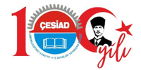
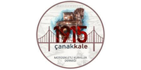
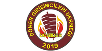
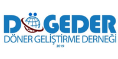
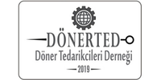
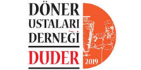
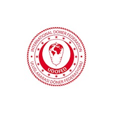
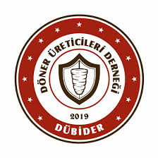
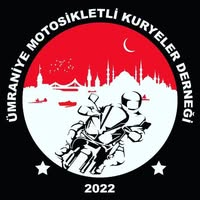
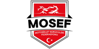
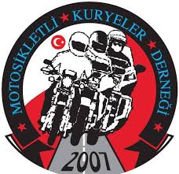
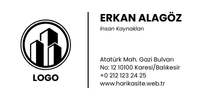
Yol Arkadaşlarımız Ne Dedi?
"Genel kurulumuzu ilk defa yapacaktık ve çok endişeliydik. SH Danışmanlık tüm süreci yönetti ve bize sadece kararları almak kaldı. Harika bir hizmet."
Ayşe Kaya
Kariyer Gelişim Vakfı Yön. Kur. Üyesi"Karmaşık tüzük değişikliği işlemimizi 3 gün gibi kısa bir sürede sorunsuzca hallettiler. Mevzuata bu kadar hakim bir ekiple çalışmak büyük bir güvence."